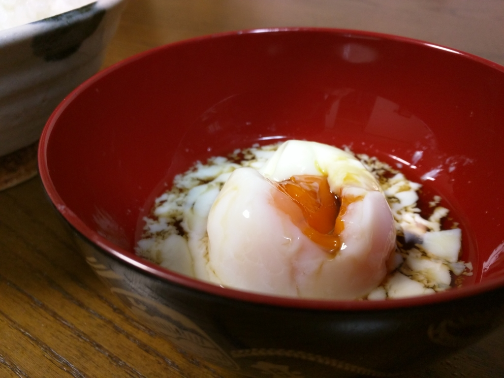
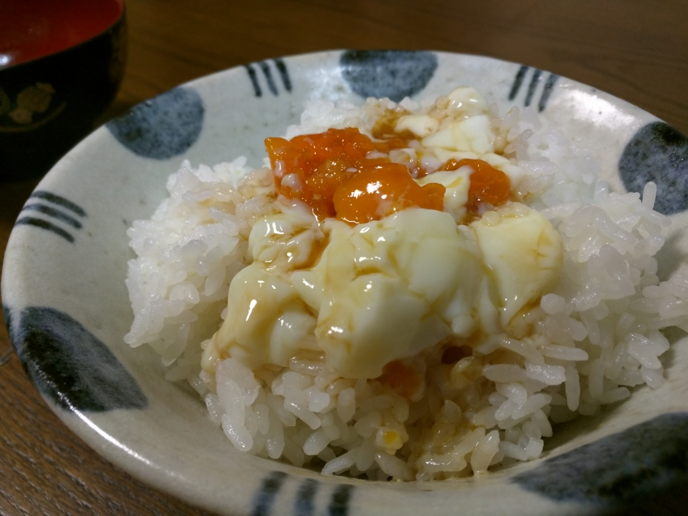
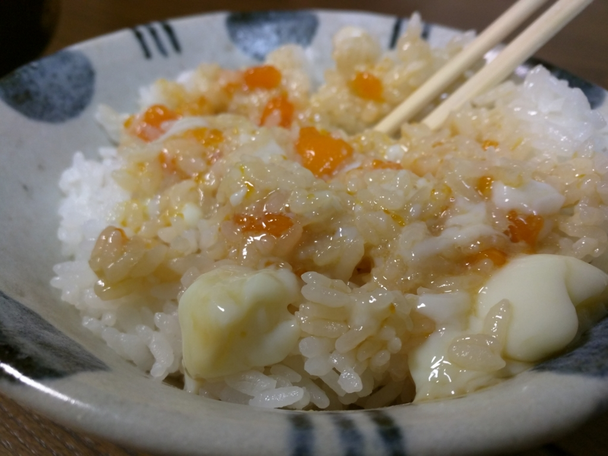

文明の利器をフル活用して oTKG に挑戦する
公開日：
この記事は「TKG Advent Calendar 2015 - Adventar」の22日目の記事です。前の日の記事の担当は yoruaki - Adventar さん、次の日の記事の担当は tmd45 - Adventar さんです。
――卵かけごはん。
なんとも言えない響きですよね。日本人の朝ごはんは、TKG（卵かけごはん）に限ると思います。
でも、弱点がないこともない。
たまごは熱を加えたほうが、より風味を引き出せます。黄身は甘みを増し、白身はでろでろとした姿を捨て、つるりとした触感を得ます。生で食べることによるお手軽さ、ダイレクトなたまご感は捨てがたいですが、基本的にたまごは少し熱を入れて食べるべきだと思います。
しかし、どこまで熱を加えてよいものか。
一つの解決策として、mTKG というものがあります。目玉焼きをごくごく半熟に焼いたたまごを乗せたごはんです。どろっとした黄身に穴をあけ、醤油をたらしこみ、ぐちゃぐちゃと下品にかき混ぜて食べる――これがなかなかよい。優れた TGK の派生と言えるでしょう。
でも、フライパンを汚してしまうというのが、いまいちお手軽じゃない。あと、白身をもう少し生に近い形で味わいたいところです。
そこでボクが考えたのが、oTKG――温泉（o）たまご（T）かけ（K）ごはん（G）だ！！
いや、最近、温泉たまご製造機を買ったので、それを試してみたかっただけなんですけどね。

まず、温泉たまごを制作。ちょっと固めだけど、いい感じにできあがりました。これにめんつゆ、しょうゆ少々、お好みでみりんなんかを足して、タレを作ります。

これを熱々のごはんの上にドンッ！

個人的に、TKG はお下品でもぐちゃぐちゃにかき混ぜて食べた方が美味しいと思います。なかなか美味しい……ごちそうさまです。
さて oTKG の感想ですが……
- ノーマル TGK に比べ水分が少ない
- 醤油だけだと味がキツい
- 水分が足りないためササッと食べられない
- 薄味のタレを多めにかけるのがいいと思う
- もっと半熟風の温泉たまごが作れるとベスト
- たまごの味の“濃さ”では oTGK に軍配が上がる
- とくに TGK の白身が苦手な人にはいいかも
- 一応火を通すため、ちょっと古めのたまごでもイケるかもしれない（保証はしない
- 温泉たまごを作るのが面倒と言えば面倒（製造機でだいたい30分
こんな感じでしょうか。一口食べたあとは、もみのりをかけていただきましたが、これがまたなかなかよろしかったことを最後に付け加え、本稿の〆とさせていただきたいと思います。